Identify filamentous fungi from a single gel.
Mycernia matches multi-locus PCR–RFLP banding patterns against a curated reference database — no sequencer, no mass spectrometer. Multi-locus, multi-fingerprint, and benchmarked out-of-sample rather than against itself.
Research preview — an interactive 21-species window into a larger curated database. Not yet for diagnostic use (see Why trust it).
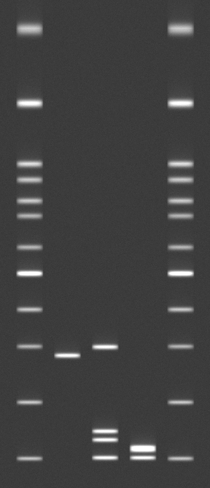
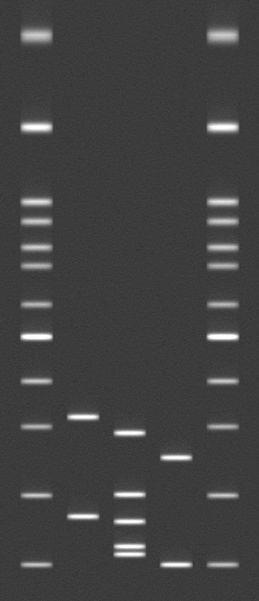
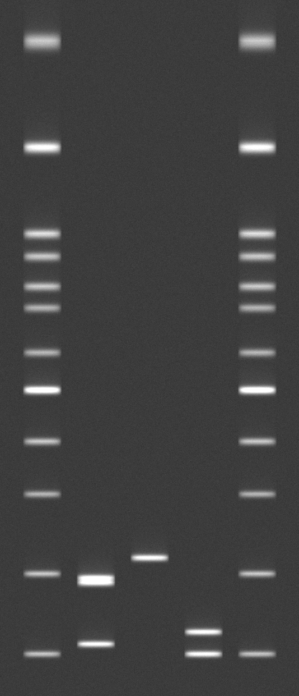
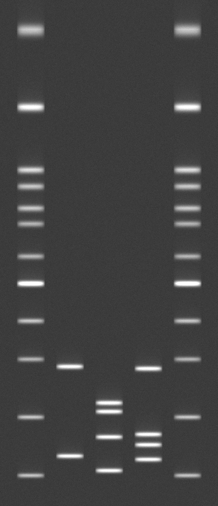
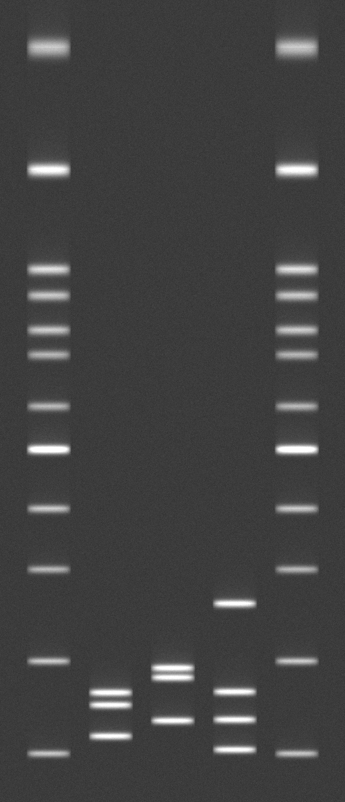
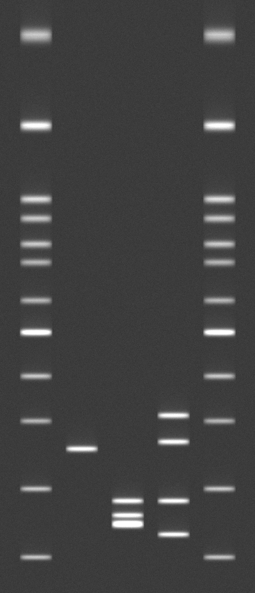
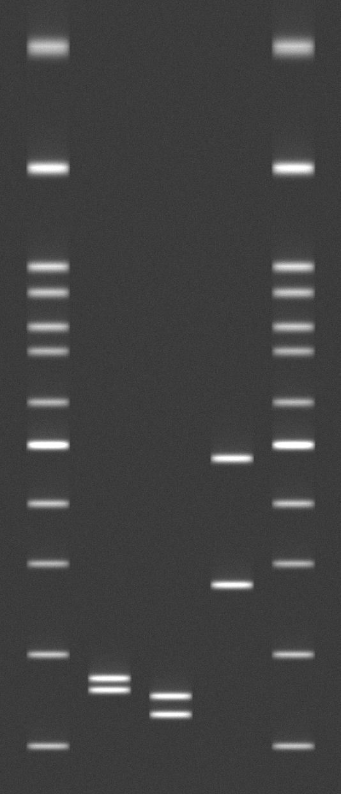
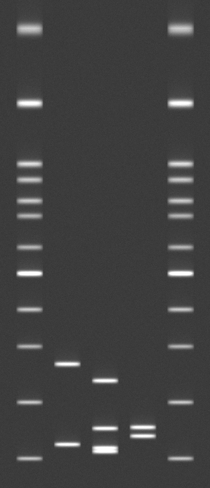
175 species, scored honestly.
Each species carries a genus-specific three-locus panel and a leave-one-out (LOO) identification rate — the share of held-out isolates it identifies uniquely. We show the rate as-is, including where it is low. Click a row for details.
One gene can't separate look-alikes. Three can.
Single-locus tools read one marker (ITS). But close relatives often share an identical ITS pattern. Mycernia reads three loci on the same gel — switch between them and watch an ambiguous call resolve to a single species.
Honest by design.
Most in-silico RFLP tools report how well they match clean references against themselves. We measured something harder — and report it plainly.
Self-validation flatters.
Matching a species against its own stored pattern looks near-perfect — but it only proves the software runs, not that it can name an unseen isolate.
overstated by 66–81 points in Aspergillus
Multi-locus recovers it.
Covering intraspecific variation with multiple fingerprints, confirmed across three loci, recovers most of the gap — honestly, on held-out isolates.
Image layer (new strains) 31% → 100%
A triage tool, not a verdict.
Mycernia returns its nearest candidate and a calibrated label, and recommends sequencing whenever the call is clinical, regulatory, or possibly out-of-scope.
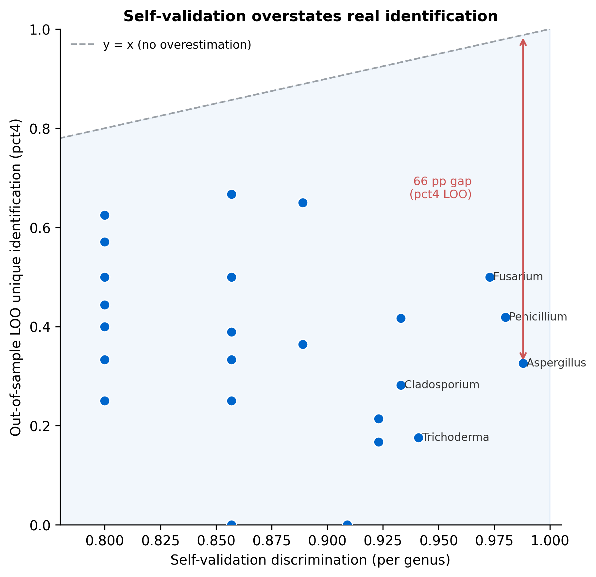
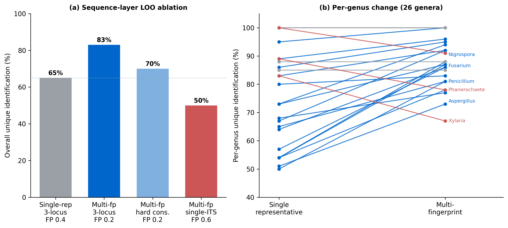
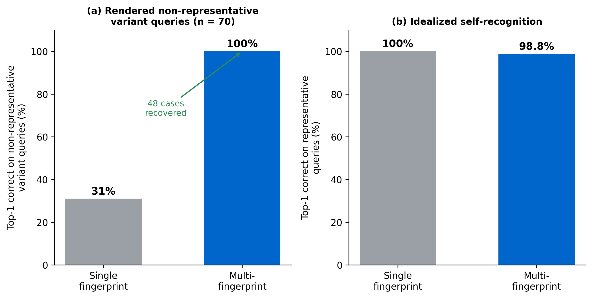
| Method | Cost | Turnaround | Equipment barrier | Marker loci | Interpretation |
|---|---|---|---|---|---|
| Morphology | Low | Days–weeks | Microscope + expertise | — | Subjective |
| Sanger ITS sequencing | Moderate | 1–several days | Sequencer + bioinformatics | Usually 1 | Objective |
| MALDI-TOF MS | High instrument | Minutes | Mass spec + proprietary DB | — | Automated |
| Manual PCR–RFLP | Low | Hours | Thermocycler + gel rig | 1–few | Subjective (visual) |
| In-silico PCR–RFLP (e.g. FId) | Low | Hours | Thermocycler + gel rig | Typically 1 (ITS) | Automated match |
| Mycernia (this work) | Low | Hours | Thermocycler + gel rig + camera | 3 (multi-locus) | Automated image match |